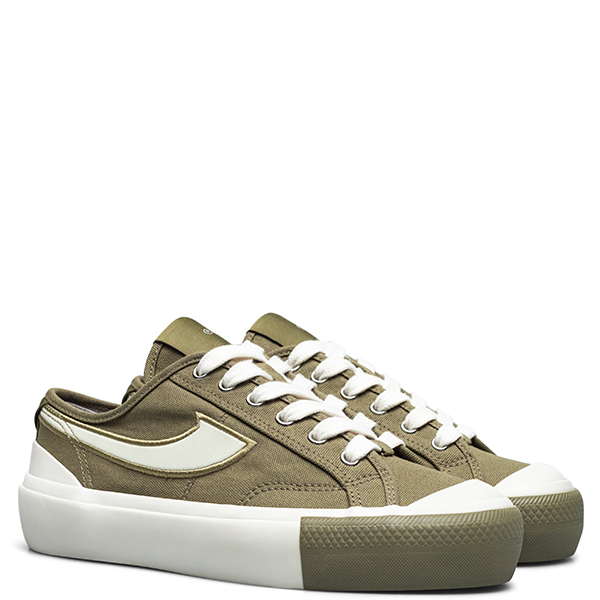

|
Velocity Fuchsia |
Velocity Mint |
Velocity Lilac |
| 
Porto Lite Sage |
Porto Lite Olive |
Porto Lite Beige |
|
Velocity Creme grape |
Velocity creme Pumpkin |
Velocity Creme Spinach |
|
Retrograde Low Creme grape |
Retrograde Low creme Pumpkin |
Retrograde Low Creme Spinach |
|
Retrograde Hi Creme grape |
Retrograde Hi creme Pumpkin |
Retrograde Hi Creme Spinach |
The Compass® brand was established in 1998 in the city of Bandung, Indonesia. It was founded by Mr. Kahar Gunawan who wanted to rebuild a shoe factory based upon the vision left by his father, Mr. Kahar Setiadi. The Compass® ethos has always been to produce good quality footwear that evoke a sense of pride when worn. Through a strong focus in design and storytelling, Compass® shoes tells the story of its culture, community and collaborators. In 2018, the Compass® brand was reimagined with a fresh contemporary touch, while continuing to uphold its historical roots through the Gazelle® identity.
We, at Compass®, have a vision to make Compass® the leading footwear brand in Indonesia that instills local pride and uplifts the reputation of Indonesian footwear industry. Through collaborations, we hope, we can give greater impact not only to our partners and Compass®, but also to the consumers.
The logo created by Mr. Kahar Setiadi in 1983, was inspired by Gazelle®, an animal known for its swiftness and agility. He wished the new brand he created would encapsulate the same spirit. 35 years later, the Gazelle® logo is revitalised in the 2018 Compass® Reborn collection, as a homage to the late Mr. Kahar Setiadi and celebration of the Gazelle brand's renown during the 1980s.
Being the Creative Director of Indonesia's most hyped and loved shoe brand, Aji Handoko Purbo, has successfully made a name for himself, by being the most sought-after Creative Director in the country. Aji has massively contributed to the success story of Compass® brand, making this local label one of the Top of Mind, cult brand in the nation. Today, Aji has proven himself to be a well-respected and one of the most admired personas in Indonesia's youth culture movement. He envisions that by building this so called ecosystem, it can provide a support system for the players to thrive not only locally but onto the global stage as well.
From the very first day, our unshaken belief in the power of authentic storytelling has carried us until today. It’s a movement to champion Indonesian products through the stories of consumers who become believers. Our journey starts from the grassroots and we are still strong believers that the power of the community, of our bonds within those communities shines through in our stories which creates impact.